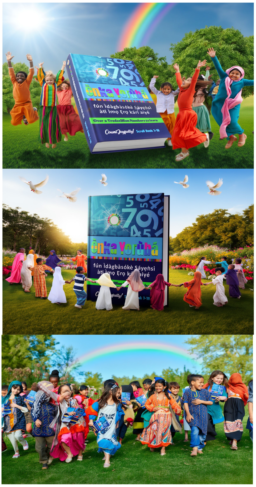

Tredecillion+ Numbers • 200 Volumes • 10 Scroll-Books • 46-Colour System

They said our tongue was too rhythmic for math, too tonal for tech, too old for tomorrow. We answered with over a Tredecillion numbers — counted, coloured, and coded in Yorùbá.
From fractured fragments, we forged a 46-Colour Protocol built for algorithms, AI, and global finance. Ten million scrolls. Two hundred volumes. One unbroken count from 1 to 10,000,000 — with an index stretching past a Tredecillion.
Here, numbers speak in every indigenous language. What was scattered is gathered. What was silenced now thunders. We are rebuilding numerical legacies worldwide — aligning ancestral intelligence with digital destiny.
Developer, student, visionary — you have found your home.
Share this Sanctuary home and abroad. When you pass on this link, you are not just sharing a site — you are handing someone the key to their intellectual heritage.
Let us project the light of the 46-Colour Protocol to every corner of the earth. Together, we count our way into a brighter, healthier future.